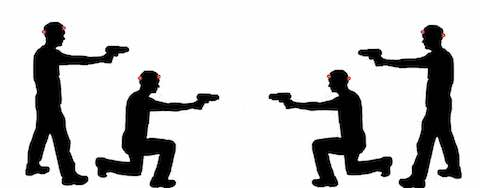

Atentie!!
Acest mod de joc se joaca in echipe.
Team Deathmatch este modul de joc clasic, ce consta in gasirea inamicilor si eliminarea lor.
Pentru jucatorii mai experimentati, se poate opta la versiunea fara respawn a jocului.(o singura viata per jucator)
Punctele sunt acordate in functie de kill-uri, death-uri si accuracy.
Reguli: